가스기사 (2009-07-26 기출문제)
1과목: 가스유체역학
1. 동점도(kinematic Viscosity) v가 4stokes인 유체가 안지름 10㎝인 관 속을 80㎝/s의 속도로 흐를 때 이 유체의 흐름에 해당하는 것은?
- 플러그 흐름
- 층류
- 전이영역의 흐름
- 난류
(정답률: 76%)

2. 내경이 2.22×10-3m인 작은 관에 0.275m/s의 평균 속도로 유체가 흐를 때 유량은 약 몇 m3/s인가?
- 1.06×10-6
- 2.7×10-5
- 5.23×10-5
- 6.13×10-6
(정답률: 56%)
3. 틈새가 2㎜인 평행한 판 사이에 점성계수가 10poise인 기름이 채워져 있다. 한 쪽 판을 2m/s의 속도로 잡아 당겼을 때 발생하는 전단응력은 몇 N/m2인가?
- 500
- 1000
- 2000
- 4000
(정답률: 50%)
4. 비압축성 유체가 원형관에서 층류로 흐를 때 평균유속과 마찰계수 또는 마찰로 인한 압력차의 관계를 옳게 설명한 것은?
- 마찰계수는 평균유속에 비례한다.
- 마찰계수는 평균유속에 반비례한다.
- 압력차는 평균유속의 제곱에 비례한다.
- 압력차는 평균유속의 제곱이 반비례한다.
(정답률: 47%)
5. U자관 마노미터를 사용하여 오리피스 유량계에 걸리는 압력차를 측정하였다. 오리피스를 통하여 흐르는 유체는 비중이 1인 물이고 마노미터 속의 액체는 비중 13.6인 수온이다. 마노미터 읽음이 20㎝일 때 오리피스에 걸리는 압력차는 약 몇 ㎏f/cm2인가?
- 0.25
- 0.63
- 2.7
- 12.6
(정답률: 38%)
6. 원심 펌프가 높은 능력으로 운전되는 경우 임펠러 흡입부의 압력이 유체의 증기압보다 낮아지면 흡입부의 유체는 증발하게 되며 이 증기는 임펠러의 고압부로 이동하여 갑자기 응축하게 된다. 이러한 현상을 무엇이라 하는가?
- 캐비테이션(cavitation)
- 펌핑(pumping)
- 디퓨전 링(diffusion ring)
- 에어 바인딩(air binding)
(정답률: 70%)
7. 그림과 같이 유체가 속도 30m/s로 직경 0.08m의 관을 통해 정지된 평판에 분사된다. 이때 평판을 유지하기 위한 힘 F는 몇 N인가? (단, 유체의 비중은 0.85이다.)
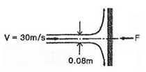
- 2345
- 2845
- 3345
- 3845
(정답률: 42%)
8. 운동 부분과 고정 부분이 밀착되어 있어서 배출공간에서부터 흡입공간으로의 역류가 최소화되며, 경질윤활유와 같은 유체수송에 적합하고 배출압력을 200atm 이상 얻을 수 있는 펌프는?
- 왕복펌프
- 회전펌프
- 원심펌프
- 격막펌프
(정답률: 67%)
9. 물이 23m/s의 속도로 노즐에서 수직상방으로 분사 될 때 손실을 무시하면 약 몇 m까지 물이 상승하는가?
- 13
- 20
- 27
- 54
(정답률: 75%)
10. 유체 수송 시 두손실 계산에 대한 설명으로 틀린 것은?
- 층류영역에서는 Hagen-Poiseuille 식을 사용한다.
- 관부속품에 대하여는 이에 상당하는 직관의 길이를 사용한다.
- 난류영역에서는 마찰계수를 구하여 Fanning 식으로 계산한다.
- 유체 수송 유로의 모양에는 무관하게 계산한다.
(정답률: 63%)
11. 펌프의 회전수를 n[rpm], 유량물 Q[m3/min], 양정을 H[m]라 할 때 펌프의 비교회전도 ns를 구하는 식은?
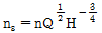
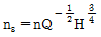
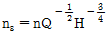
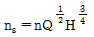
(정답률: 63%)
12. 유체의 거동에서 이상유체(ideal fluid)에 대한 설명 중 틀린 것은?
- 비압축성이고 점도가 0인 유체이다.
- 비회전흐름(irrotation flow)이다.
- 기계적 에너지가 열로 손실된다.
- 퍼텐셜 흐름(potential flow)이다.
(정답률: 52%)
13. 그림과 같은 물 딱총 피스톤을 미는 단위 면적당 힘의 세기가 P[N/m2]일 때 물이 분출되는 속도 V는 몇 m/s인가? (단, 물의 밀도는 ρ[㎏/m3]이고, 피스톤의 속도와 손실은 무시한다.)
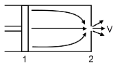
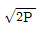
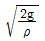
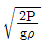
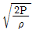
(정답률: 49%)
14. 압축성 계수 β를 온도 T, 압력 P, 부피 V의 함수로 옳게 나타낸 것은?
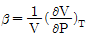
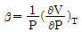
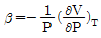
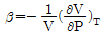
(정답률: 62%)
15. 수직 충격파에 대한 설명으로 옳은 것은?
- 등엔트로피 과정이다.
- 등엔탈피 과정이다.
- 가역 과정이다.
- 비가역 과정이다.
(정답률: 60%)
16. 축소확대 노즐의 확대부분에서의 유속에 대한 설명으로 옳은 것은?
- 항상 초음속이다.
- 항상 아음속이다.
- 초음속이 불가능하다.
- 초음속이 가능하다.
(정답률: 56%)
17. 힘의 차원을 질량 M, 길이 L, 시간 T로 나타낼 때 옳은 것은?
- MLT-2
- ML-3T-2
- ML-2T-3
- ML-1
(정답률: 67%)
18. 수평 원관 속의 유체흐름이 층류일 경우 유량은?
- 관의 길이에 비례한다.
- 관 직경의 4승에 비례한다.
- 압력강하에 반비례한다.
- 점성에 비례한다.
(정답률: 57%)
19. 깊이 7.0m의 통에 아세톤을 채웠다. 대기압이 750㎜Hg일 때 통 밑바닥에서의 절대압력은 몇 kPa인가? (단, 아세톤의 밀도는 791㎏/m3이다.)
- 54.3
- 144.3
- 154.3
- 164.3
(정답률: 39%)
20. 실험실의 풍동에서 20℃의 공기로 실험을 할 때 마하각이 30°이면 풍속은 몇 m/s가 되는가? (단, 공기의 비열비는 1.4이다.)
- 278
- 364
- 512
- 686
(정답률: 40%)
2과목: 연소공학
21. Carnot 기관이 12.6kJ의 열을 공급받고 5.2kJ의 열을 배출한다면 동력기관의 효율은 약 몇 %인가?
- 33.2
- 43.2
- 58.7
- 68.4
(정답률: 67%)
22. 열기관의 효율을 길이의 비로 나타낼 수 있는 선도는?
- P-T선도
- T-S선도
- H-S선도
- P-V선도
(정답률: 68%)
23. Van der waals식(P＋(an)2/V2)(V-nb)=nRT에 대한 설명으로 틀린 것은?
- a의 단위는 atm·L2/mol2이다.
- b의 단위는 L/mol이다.
- a의 값은 기체분자가 서로 어떻게 강하게 끌어당기는가를 나타낸 값이다.
- a는 부피에 대한 보정항의 비례상수이다.
(정답률: 56%)
24. 습증기의 엔트로피가 압력 2026.5kPa에서 3.22kJ/㎏·K이다. 이 압력에서 포화수 및 포화증기의 엔트로피가 각각 2.44kJ/㎏·K 및 6.35kJ/㎏·K 이라면, 이 습증기의 습도는 약 몇 %인가?
- 56
- 68
- 75
- 80
(정답률: 28%)
25. 다음 [보기]의 열역학에 대하여 옳은 것을 모두 나열한 것은?
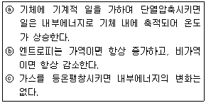
- ⓐ
- ⓑ
- ⓐ, ⓒ
- ⓑ, ⓒ
(정답률: 59%)
26. 일정 압력하에서 -30℃의 이산화탄소가스의 부피는 10℃에서의 부피의 약 얼마가 되는가?
- 0.75
- 0.86
- 1.16
- 1.33
(정답률: 35%)
27. 난류 예혼합화염에 대한 설명으로 옳은 것은?
- 층류 예혼합화염에 비해 연소속도가 늦다.
- 화염의 배후에 다량의 미연소분이 존재한다.
- 층류 예혼합화염에 비해 화염의 밝기가 어둡다.
- 층류 예혼합화염에 비해 화염의 두께가 비교적 얇다.
(정답률: 49%)
28. 탄소 1㎏을 이론공기량으로 완전연소시켰을 때 발생되는 연소가스량은 약 몇 Nm3인가?
- 1.867
- 8.889
- 11.2
- 22.4
(정답률: 46%)
29. 공기비가 클 경우 공기비가 연소에 미치는 영향에 대한 설명으로 가장 거리가 먼 것은?
- 저온부식의 우려가 높아진다.
- 연소실 내의 온도가 상승한다.
- 배기가스에 의한 열손실이 증대된다.
- 연소가스 중 NO2등의 함량이 증가한다.
(정답률: 60%)
30. 프로판가스 1Nm3을 완전연소시켰을 때의 건조연소가스량은 약 몇 Nm3인가? (단, 공기 중의 산소는 21v%이다.)
- 10
- 16
- 22
- 30
(정답률: 58%)
31. 연소부하율이 작지만 화염이 안정하고 조작이 용이하며 역화의 위험성이 적은 기체의 연소방식은?
- 확산연소
- 예혼합식
- 부분예혼합식
- 표면연소
(정답률: 66%)
32. 다음은 Air-standard otto cycle의 P-V diagram이다. 이 cycle의 효율(η)을 옳게 나타낸 것은? (단, 정적열용량은 일정하다.)
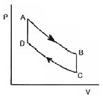
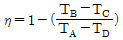
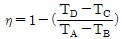
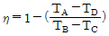
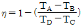
(정답률: 71%)
33. 대기압이 760㎜Hg일 때 진공도 90%의 절대압력은 약 몇 kPa인가?
- 10.13
- 20.13
- 101.3
- 203.3
(정답률: 41%)
34. 폭굉(detonation)에 대한 설명으로 옳지 않은 것은?
- 폭굉파는 음속이하에서 발생한다.
- 압력 및 화염속도가 최고치를 나타낸 곳에서 일어난다.
- 폭굉유도거리는 혼합기의 종류, 상태, 관의 길이 등에 따라 변화한다.
- 폭굉은 폭약 및 화약류의 폭발, 배관 내에서의 폭발 사고 등에서 관찰된다.
(정답률: 66%)
35. 액체 프로판이 온도는 298K, 압력은 0.1MPa에서 이론 공기를 이용하여 연소하고 있을 때 고위발열량은 약 몇 kJ/㎏인가? (단, 연료의 증발 엔탈피는 370kJ/㎏이고, 기체상태의 C3H6의 형성 엔탈피는 -103909kJ/kmol, CO2의 형성 엔탈피는 -393757kJ/kmol, 액체 및 기체상태의 H2O 형성엔탈피는 각각 -286010kJ/kmol, -241971kJ/kmol이다.)
- 44000
- 46000
- 50000
- 22⑤100
(정답률: 38%)
36. 수소(H2)가 완전연소할 때의 고위발열량(Hh)과 저위발열량(HL)의 차이는 약 몇 kJ/kmol인가? (단, 물의 증발열은 273K, 포화상태에서 2501.6kJ/㎏이다.)
- 40240
- 42410
- 44320
- 45070
(정답률: 45%)
37. 불활성화(Inerting)란 가연성 혼합가스에 불활성 가스를 주입하여 산소의 농도를 연소를 위한 최소산소농도(MOC)이하로 하는 공정을 말한다. 다음 중 인너트가스로 사용하지 않는 것은?
- 질소
- 이산화탄소
- 수증기
- 일산화탄소
(정답률: 50%)
38. 물 10㎏이 100℃에서 증발할 때의 엔트로피의 변화량은 약 몇 kcal/K인가? (단, 100℃에서의 증발잠열은 539kcal/㎏이다.)
- 1.45
- 2.9
- 14.5
- 29
(정답률: 47%)
39. 과잉연소 상태일 때의 공기비(m)는?
- m < 1
- m > 1
- m＝1
- m＝0
(정답률: 75%)
40. 프로판가스에 대한 최소산소농도값(MOC)를 추산하면 얼마인가? (단, C3H3의 폭발하한치는 2.1v%이다.)
- 8.5%
- 9.5%
- 10.5%
- 11.5%
(정답률: 39%)
3과목: 가스설비
41. LPG 저장용기에 대한 설명으로 틀린 것은?
- 용기의 색은 회색을 사용한다.
- 안전밸브는 스프링식을 주로 사용한다.
- 용기의 재질은 탄소강을 주로 사용한다.
- 내압시험 압력은 상용압력 이상으로 한다.
(정답률: 40%)
42. LNG를 도시가스원료로 사용할 경우의 장점에 대한 설명으로 틀린 것은?
- 냉열 이용이 가능하다.
- 안정된 연소상태를 얻을 수 있다.
- 기화시켜 사용할 경우 정제설비가 필요하다.
- 메탄가스가 주성분으로 공기보다 가벼워 폭발위험이 적다.
(정답률: 63%)
43. 대기압에서 26Kg/cm2g까지 3단 압축하는 경우 압축동력을 최소로 하고자 할 때 1단 토출압력은 약 몇 ㎏/cm2g가 되겠는가?
- 1.07
- 2.07
- 3.07
- 4.⑤
(정답률: 36%)
44. 개방형 압축기의 특징에 대한 설명으로 틀린 것은?
- 소음과 진동이 없다.
- 보수·점검·취급이 용이하다.
- 압축기와 전동기가 별개로 되어 있다.
- 압축기 회전수를 바꾸어 사용조건에 적합한 운전이 가능하다.
(정답률: 62%)
45. 증기 압축 냉동사이클에서 단열팽창 과정은 어느 곳에서 이루어지는가?
- 압축기
- 팽창밸브
- 응축기
- 증발기
(정답률: 65%)
46. 원유, 등유, 나프타 등 분자량이 큰 탄화수소 원료를 고온(800~900℃)으로 분해하여 10000㎉/m3 정도의 고열량 가스를 제조하는 방법은?
- 열분해공정
- 접촉분해공정
- 부분연소공정
- 대체천연가스공정
(정답률: 87%)
47. 바닷물과 LNG를 열교환하여 LNG를 기화하는 방식으로서 해수를 열원으로 하기 때문에 운전비용이 저렴하여 기저부하(base load)용으로 주로 사용하는 기화기는?
- 오픈랙 기화기
- 서브머지드 기화기
- 중간매체식 기화기
- 간접가열식 기화기
(정답률: 66%)
48. 염화수소(HCl)에 대한 설명으로 틀린 것은?
- 폐가스는 대량의 물로 처리해야 한다.
- 누출된 가스는 암모니아수로 알 수 있다.
- 회색의 자극성 냄새를 갖는 가연성 기체이다.
- 건조 상태에서는 금속을 거의 부식시키지 않는다.
(정답률: 35%)
49. 기화기를 구성하는 주요 설비가 아닌 것은?
- 열교환기
- 액 유출 방지장치
- 열매 이송장치
- 열매온도 제어장치
(정답률: 38%)
50. 이음새 없는 용기의 제조법 중 이음새 없는 강관을 사용하는 방식은?
- 웰딩식
- 딥드로잉식
- 에르하르트식
- 만네스만식
(정답률: 72%)
51. LP가스 사용 시의 특징에 대한 설명으로 틀린 것은?
- 연소기는 LP가스에 맞는 구조이어야 한다.
- 발열량이 커서 단시간에 온도상승이 가능하다.
- 배관이 거의 필요 없어 입지적 제약을 받지 않는다.
- 예비용기는 필요 없지만 특별한 가압장치가 필요하다.
(정답률: 56%)
52. 전양정 27m, 유량 1.2m3 /min의 펌프가 효율 80%인 경우 축동력은 약 몇 PS인가? (단, 액체의 밀도는 1000Kg/m3이다.)
- 3
- 5
- 7
- 9
(정답률: 52%)
53. 암모니아에 이용되는 합성법의 종류가 아닌 것은?
- IG법
- 뉴파우더법
- 케로그법
- 레페 반응법
(정답률: 71%)
54. 다음 중 수소를 얻을 수 없는 반응은?
- Al＋NaOH＋H2O
- Hg＋HCl
- Na＋H2O
- Zn＋H2SO4
(정답률: 77%)
55. 클라우드식 공기액화사이클의 주요 구성요소가 아닌 것은?
- 열교환기
- 축냉기
- 액화기
- 팽창기
(정답률: 50%)
56. 성능계수가 3.2인 냉동기가 10ton의 냉동을 위하여 공급하여야 할 동력은 약 몇 kW인가?
- 8
- 12
- 16
- 20
(정답률: 38%)
57. 아세틸렌(C2H4)가스의 분해 폭발을 방지하기 위한 희석제의 종류가 아닌 것은?
- CO
- C2H2
- H2S
- N2
(정답률: 47%)
58. 실제기체를 고압상태에서 단열팽창시키면 온도가 강하하는 현상을 무엇이라 하는가?
- 등엔트로피효과
- 줄톰슨효과
- 베르누이효과
- 레이놀즈효과
(정답률: 62%)
59. 염소가 폭명기로 작용할 수 있는 가스의 조성은?
- 염소와 수소가 같은 몰비로 혼합되었을 때
- 염소와 산소가 같은 몰비로 혼합되었을 때
- 염소와 산소가 1 : 2의 몰비로 혼합되었을 때
- 염소와 수소가 1 : 2의 몰비로 혼합되었을 때
(정답률: 47%)
60. 부하변화가 큰 곳에 사용되는 정압기의 중요한 특성으로 부하변동에 대한 신속성과 안전성이 요구되는 특성은?
- 정특성
- 유량특성
- 동특성
- 사용최대차압
(정답률: 49%)
4과목: 가스안전관리
61. 액화석유가스 충전용기 내에 수분이 존재할 때 용기밸브 및 배관에 미치는 영향에 대한 설명으로 가장 옳은 것은?
- 액화석유가스의 발열량이 높아진다.
- 사용 중 증발잠열로 수분이 얼어 밸브나 배관을 막는다.
- 사용 중 수분의 혼입으로 폭발의 위험성이 생긴다.
- 수분의 혼입에 의해 배관 및 밸브에 균열이 생긴다.
(정답률: 52%)
62. 콕 제조 기술기준에 대한 설명으로 틀린 것은?
- 1개의 핸들로 1개의 유로를 개폐하는 구조로 한다.
- 완전히 열었을 때 핸들의 방향은 유로의 방향과 직각인 것으로 한다.
- 닫힌 상태에서 예비적 동작이 없이는 열리지 아니하는 구조로 한다.
- 핸들은 90° 나 180° 회전하여 개폐되는 구조로 한다.
(정답률: 63%)
63. 아세틸렌 용기의 도색 및 표시기준에 대한 설명으로 틀린 것은?
- 용기에 “연” 자를 표시한다.
- 충전용기의 도색은 황색으로 한다.
- 충전기한의 문자 색상은 적색으로 한다.
- 아세틸렌가스명의 문자 색상은 적색으로 한다.
(정답률: 47%)
64. 물분무장치는 당해 저장탱크의 외면에서 몇 m 이상 떨어진 안전한 위치에서 조작할 수 있어야 하는가?
- 5
- 10
- 15
- 20
(정답률: 60%)
65. 2개 이상의 탱크를 동일 차량에 고정할 때의 기준으로 틀린 것은?
- 탱크의 주밸브는 1개만 설치한다.
- 충전관에는 긴급 탈압밸브를 설치한다.
- 충전관에는 안전밸브, 압력계를 설치한다.
- 탱크와 차량과의 사이를 단단하게 부착하는 조치를 한다.
(정답률: 64%)
66. 액화가스를 차량에 적재하여 운반할 때 일정량 이상이면 운반책임자를 동승하도록 되어 있다. 그 기준량으로 옳지 않은 것은?
- C3H3 : 3000㎏ 이상
- Cl2 : 1000㎏ 이상
- NH3 : 2000㎏ 이상
- O2 : 6000㎏ 이상
(정답률: 53%)
67. LPG 저장탱크에 가스를 충전할 때 가스의 용량은 상용의 온도에서 저장탱크 내용적의 몇 %를 넘지 않아야 하는가? (단, 저장탱크의 저장능력은 5톤이다.)
- 62
- 85
- 90
- 98
(정답률: 67%)
68. 산소용기에 압축산소가 35℃에서 150㎏f/cm2·g로 충전되어 있다. 용기온도가 0℃로 저하하면 압력은 약 몇 ㎏f/cm2·g가 되는가? (단, 산소는 이상기체로 가정한다.)
- 103
- 112
- 124
- 133
(정답률: 38%)
69. 염소의 제독제로 적당하지 않은 것은?
- 물
- 소석회
- 가성소다 수용액
- 탄산소다 수용액
(정답률: 67%)
70. 다음 중 가연성가스이지만 독성이 없는 가스는?
- NH3
- CO
- HCN
- C3H6
(정답률: 64%)
71. 고압고무호스로 분류되는 투윈호스에는 체크밸브가 부착되어 있다. 정상 작동 차압의 기준은 얼마인가?
- 50kPa 이하
- 60kPa 이하
- 70kPa 이하
- 80kPa 이하
(정답률: 45%)
72. 안전관리자가 상주하는 사업소와 현장사무소와의 사이 또는 현장사무소 상호간에 설치하는 통신설비가 아닌 것은?
- 휴대용확성기
- 구내전화
- 구내방송설비
- 페이징설비
(정답률: 72%)
73. 차량이 통행하기 곤란한 지역에서 액화석유가스충전용기를 오토바이에 적재·운반시의 기준으로 틀린 것은?
- 오토바이에는 용기운반전용적재함이 장착되어 있어야 한다.
- 적재하는 충전용기는 충전량이 20㎏ 이하 이어야 한다.
- 적재하는 충전용기의 적재수는 2개를 초과하지 않아야 한다.
- 적재하는 충전용기의 충전량이 10㎏ 이하인 경우에는 적재수를 4개까지 할 수 있다.
(정답률: 75%)
74. 원심식 압축기를 사용하는 냉동설비는 그 압축기의 원동기 정격출력 kW를 1일의 냉동능력 1톤으로 하는가?
- 0.5
- 1.2
- 2.5
- 3.2
(정답률: 53%)
75. 다음 중 내압 방폭구조의 기호는?
- d
- o
- p
- e
(정답률: 73%)
76. 차량에 고정된 탱크에는 차량의 진행방향과 직각이 되도록 방파판을 설치하여야 한다. 방파판의 면적은 탱크 횡단면적의 몇 % 이상이 되어야 하는가?
- 30
- 40
- 50
- 60
(정답률: 64%)
77. 액화석유가스의 적절한 품질을 확보하기 위하여 정해진 품질기준에 맞도록 품질을 유지하여야 하는 자에 해당하지 않는 것은?
- 액화석유가스충전사업자
- 액화석유가스특정사업자
- 액화석유가스판매사업자
- 액화석유가스집단공급사업자
(정답률: 52%)
78. 액화석유가스 충전사업자는 거래상황 기록부를 작성하여 한국가스안전공사에게 보고하여야 한다. 보고기한의 기준으로 옳은 것은?
- 매달 다음달 10일
- 매분기 다음달 15일
- 매반기 다음달 15일
- 매년 1월 15일
(정답률: 62%)
79. 충전질량 1000㎏ 이상인 LPG소형저장탱크 부근에 설치하여야 하는 소화기의 능력단위와 개수로 옳은 것은?
- ABC용 B-5 분말소화기 2개
- ABC용 B-12 분말소화기 2개
- ABC용 B-12 분말소화기 1개
- ABC용 B-20 분말소화기 1개
(정답률: 71%)
80. 도시가스시설에서 가스사고가 발생한 경우 사고의 종류별 통보방법과 통보기한의 기준으로 틀린 것은?
- 사람이 사망한 사고 : 속보(즉시), 상보(사고발생 후 20일 이내)
- 사람이 부상당하거나 중독된 사고 : 속보(즉시), 상보(사고발생 후 15일 이내)
- 가스누출에 의한 폭발 또는 화재사고(사람이 사망·부상 중독된 사고 제외) : 속보(즉시)
- LNG 인수기지의 LNG 저장탱크에서 가스가 누출된 사고(사람이 사망·부상·중독되거나 폭발·화재 사고 제외) : 속보(즉시)
(정답률: 54%)
5과목: 가스계측기기
81. 다음 중 액면 측정방법이 아닌 것은?
- 압력식
- 정전용량식
- 박막식
- 부자식
(정답률: 52%)
82. 관의 길이 250㎝에서 벤젠의 가스크로마토그램을 재었더니 머무른 부피가 82.2㎜, 봉우리의 폭(띠나비)이 9.2mm이었다. 이때 이론단수는 몇 단인가?
- 812
- 995
- 1063
- 1277
(정답률: 30%)
83. 에탄올, 헵탄, 벤젠, 에틸아세테이트로 된 4성분혼합물을 TCD를 이용하여 정량분석하려고 한다. 다음 데이터를 이용하여 각 성분(에탄올 : 헵탄 : 벤젠 : 에틸아세테이트)의 중량분율(wt%)을 구하면?
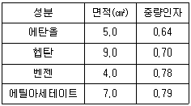
- 20 : 36 : 16 : 28
- 22.5 : 37.1 : 14.8 : 25.6
- 22.0 : 24.1 : 26.8 : 27.1
- 17.6 : 34.7 : 17.2 : 30.5
(정답률: 55%)
84. 다음 중 잔류편차가 허용될 때 주로 사용되는 제어는?
- P제어
- PI제어
- PD제어
- PID제어
(정답률: 50%)
85. 흡수법에 의해 수소와 탄산가스의 혼합가스 중 탄산가스의 용량을 측정하고자 할 때 흡수제로 적합한 것은?
- 수산화칼륨 수용액
- 무수황산 함유 발열황산
- 알칼리성 피로갈를용액
- 염화암모늄 및 염화제1구리 수용액
(정답률: 42%)
86. 부르돈관(Bourdon tube)에 대한 설명 중 틀린 것은?
- 막식압력계보다 고압 측정이 가능하다.
- C형, 와권형, 나선형, 버튼형 등이 있다.
- 계기 하나로 2공정의 압력차 측정이 가능하다.
- 곡관에 압력이 가해지면 곡률 반경이 증대되는 것을 이용한 것이다.
(정답률: 60%)
87. R형 열전대(thermocouple)의 (-)축 재료로서 옳은 것은?
- Rh
- Pt 87%, Rh 13%
- Pt
- Pt 13%, Rh 87%
(정답률: 50%)
88. 막식가스미터에서의 고장 중 감도불량에 대한 설명으로 가장 옳은 것은?
- 가스는 미터를 통과하나 미터지침이 작동하지 않는 고장
- 가스가 미터를 통과하지 못하는 고장
- 미터에 감도유량을 흘렸을 때 미터지침의 시도에 변화가 나타나지 않는 고장
- 실(seal)부분의 기밀이 파손되었을 때 생기며, 패킹(packing) 재료의 열화가 주된 원인인 고장
(정답률: 59%)
89. 다음 검출기 중 SO2, H2O, CO2에 응답하지 않는 것은?
- 열전도검출기(TCD)
- 염광광도검출기(FPD)
- 전자포획검출기(ECD)
- 수소불꽃이온검출기(FID)
(정답률: 62%)
90. 다음 중 추량식 가스미터에 해당되지 않는 것은?
- 벤투리미터
- 오리피스미터
- 로터리피스톤식미터
- 델타형미터
(정답률: 55%)
91. 비례적분 제어동작에 대한 설명으로 옳은 것은?
- 진동이 제거되어 빨리 안정된다.
- 출력이 제어편차의 시간변화에 비례한다.
- 부하가 아주 작은 프로세스에 적용된다.
- 전달느림이 크면 사이클링의 주기가 커진다.
(정답률: 45%)
92. 단일 루프제어에 비해 외란의 영향을 줄이고 계전체의 지연을 적게 하는데 유효하기 때문에 출력측에 낭비시간이나 지연이 큰 프로세스제어에 이용되는 제어는?
- 추종제어
- 캐스케이드제어
- 프로그램제어
- 비율제어
(정답률: 59%)
93. 다음 중 가장 저온에 대하여 연속 사용할 수 있는 열전대 온도계의 형식은?
- T
- R
- S
- L
(정답률: 49%)
94. 다음과 같은 사용온도범위 및 특징을 가진 저항온도계의 온도센서는?
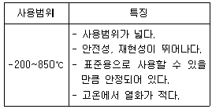
- 서미스터
- 백금
- 니켈
- 게르마늄
(정답률: 55%)
95. 수은압력계를 사용하여 탱크 내의 압력을 측정한 결과 760㎜Hg이었다. 대기압이 750㎜Hg라면 절대압력은 약 몇 kPa인가?
- 2.01
- 20.1
- 201
- 2013
(정답률: 55%)
96. 관로의 유속을 피토관으로 측정할 때 마노미터의 수주의 높이가 50㎝이었다. 이때 유속은 약 몇 m/s인가?
- 2.1
- 3.1
- 4.1
- 5.1
(정답률: 44%)
97. 연소분석법 중 탄화수소는 산화시키지 않고 H2 및 CO만을 분별적으로 완전 산화시키는 방법은?
- 폭발법
- 파라듐관 연소법
- 완만 연소법
- 헴펠법
(정답률: 37%)
98. 실온 22℃, 습도 45%, 기압 765㎜Hg인 공기의 증기 분압(Pw)은 약 몇 ㎜Hg인가? (단, 공기의 가스상수는 29.27㎏·m/㎏·K, 22℃에서 포화 압력(Ps)은 18.66㎜Hg이다.)
- 4.1
- 8.4
- 14.3
- 16.7
(정답률: 47%)
99. 접촉법에 의해 온도를 측정하는 압력식 온도계에 대한 설명으로 틀린 것은?
- 감온부, 도압부, 감압부로 구성되어 있다.
- 증기압력식은 에틸에테르, 프레온 등을 사용한다.
- 기체압력식은 수소, 헬륨 등 가벼운 가스를 사용한다.
- 액체압력식은 수은, 아닐린, 알코올 등을 사용한다.
(정답률: 57%)
100. 아르키메데스의 원리를 이용한 액면 측정계기는?
- 플로트식 액면계
- 초음파식 액면계
- 정전용량식 액면계
- 방사선식 액면계
(정답률: 52%)
층류는 유체가 일정한 속도로 일직선적으로 흐르는 것으로, 유체의 입자들이 서로 간에 상대적으로 정렬되어 일정한 방향으로 이동합니다. 이와 달리 플러그 흐름은 유체가 관의 중심을 따라 일정한 속도로 흐르는 것이며, 전이영역의 흐름과 난류는 유체 입자들이 서로 교차하며 불규칙한 움직임을 보입니다.
따라서, 동점도가 4stokes인 유체가 안지름 10㎝인 관 속을 80㎝/s의 속도로 흐를 때 이 유체의 흐름은 층류입니다.